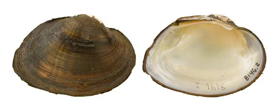

Strophitus undulatus (Say, 1817)
Creeper

Strophitus undulatus – Big Cypress Creek [Cypress River drainage], length 68 mm.
Identification
Shell structure: thin to somewhat thick, compressed to moderately inflated.
Shell outline: subrhomboial to elliptical.
Posterior ridge: sharp to rounded, sometimes double.
Shell color: yellowish-greenish, reddish-brown, brown or black; surface subglossy to dull.
Rays: may show numerous green rays of various widths.
Shell texture: without sculpture.
Umbo: low and wide, elevated above the hinge line; umbo cavity moderately shallow to somewhat deep.
Umbo sculpture: single-looped ridges that may appear V- or U-shaped.
Pseudocardinal teeth: rudimentary, represented by a thickened hinge line, slightly sinuous.
Lateral teeth: absent but hinge line somewhat thickened.
Interdentum: absent.
Nacre: white, occasionally with a pink, salmon, or yellow tint dorsally, but some individuals may be salmon or orange throughout; iridescent posteriorly.
Other: not sexually dimorphic.
General range
Central Texas east to northern Louisiana, northeast to South Carolina, then north to the Atlantic Coast drainages of Nova Scotia, west through parts of the Great Lakes Basin to Minnesota, South Dakota, Kansas and Oklahoma.
Habitat
Headwater streams to large rivers, occasionally in lakes and canals. In riverine habitats can be found in riffles and areas with less current such as along banks or in backwaters. Can occur in a variety of substrates including mud, sand, gravel, and may be found wedged in cracks in bedrock slabs, roots of trees along steep banks, or among macrophyte beds.
Legal listing status